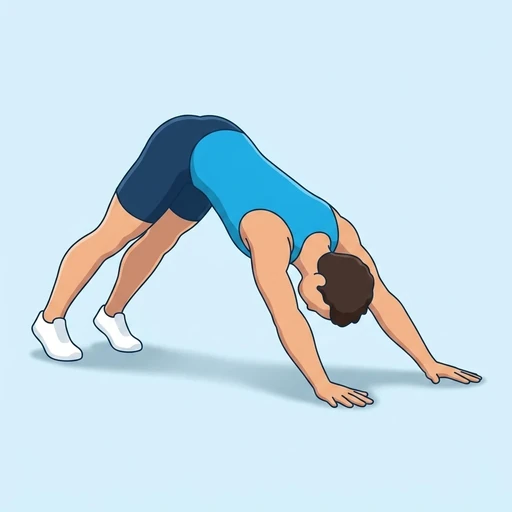

Downward Dog to Plank
A moving transition between downward dog and a high plank: the hips travel from high to level and back, so the shoulders and trunk work through a full range instead of holding one position.
Shoulders · Bodyweight · Intermediate


Muscles worked by the Downward Dog to Plank
Primary
Secondary
Also called: front deltoid, anterior delt, front delt, anterior deltoid, abs, six-pack.
Equipment
No equipment — this is a bodyweight exercise.
How to do the Downward Dog to Plank
- Set up in downward dog with the hips high and the hands shoulder-width apart.
- Shift the weight forward and lower the hips until the body forms a straight line in a high plank.
- Hold the plank for a moment with the ribs down and the glutes engaged.
- Press the floor away and lift the hips back up into downward dog.
- Continue alternating for the desired number of repetitions.
Form tips
- Move the hips, not the hands; the palms stay in the same place the whole set.
- Keep the shoulders pushing away from the ears in both positions.
- Slow the transition down if the lower back sags on the way into the plank.
At a glance
| Body part | Shoulders |
|---|---|
| Category | Strength |
| Force type | Dynamic |
| Mechanic | Compound |
| Difficulty | Intermediate |
| Equipment | Bodyweight |
| Goals | Endurance, Strength |
| Tags | Calisthenics |
| MET | 5.0 (metabolic equivalent, for calorie estimates) |
| Unilateral | No |
| Bodyweight | Yes |
| Dataset id | downward-dog-to-plank |
Downward Dog to Plank in German & Spanish
| German | Herabschauender Hund zum Plank |
|---|---|
| Spanish | Perro Boca Abajo a Plancha |
Descriptions, instructions and tips ship in all three languages in the JSON.
Related exercises
Exercise data (JSON)
The record below is exactly what exercises.json ships for this exercise — names, descriptions, instructions and tips in English, German and Spanish.
{
"id": "downward-dog-to-plank",
"name_en": "Downward Dog to Plank",
"name_de": "Herabschauender Hund zum Plank",
"name_es": "Perro Boca Abajo a Plancha",
"description_en": "A moving transition between downward dog and a high plank: the hips travel from high to level and back, so the shoulders and trunk work through a full range instead of holding one position.",
"description_de": "Ein bewegter Übergang zwischen herabschauendem Hund und hohem Plank: die Hüfte wandert von hoch auf waagerecht und zurück, sodass Schultern und Rumpf durch den vollen Bewegungsradius arbeiten statt eine Position zu halten.",
"description_es": "Una transición en movimiento entre el perro boca abajo y la plancha alta: las caderas viajan de arriba a la horizontal y de vuelta, de modo que hombros y tronco trabajan en recorrido completo en lugar de sostener una posición.",
"category": "strength",
"force_type": "dynamic",
"mechanic": "compound",
"difficulty": "intermediate",
"body_part": "shoulders",
"primary_muscles": [
"anterior_deltoid",
"rectus_abdominis"
],
"secondary_muscles": [
"hamstrings",
"serratus_anterior",
"trapezius"
],
"goals": [
"endurance",
"strength"
],
"tags": [
"calisthenics"
],
"is_unilateral": false,
"is_bodyweight": true,
"instructions_en": [
"Set up in downward dog with the hips high and the hands shoulder-width apart.",
"Shift the weight forward and lower the hips until the body forms a straight line in a high plank.",
"Hold the plank for a moment with the ribs down and the glutes engaged.",
"Press the floor away and lift the hips back up into downward dog.",
"Continue alternating for the desired number of repetitions."
],
"instructions_de": [
"Geh in den herabschauenden Hund, die Hüfte hoch, die Hände schulterbreit.",
"Verlager das Gewicht nach vorn und senk die Hüfte, bis der Körper im hohen Plank eine gerade Linie bildet.",
"Halte den Plank einen Moment, die Rippen unten, die Glutes angespannt.",
"Druck den Boden weg und heb die Hüfte zurück in den herabschauenden Hund.",
"Wechsle weiter für die gewünschte Anzahl an Wiederholungen."
],
"instructions_es": [
"Colócate en perro boca abajo con las caderas altas y las manos a la anchura de los hombros.",
"Desplaza el peso hacia delante y baja las caderas hasta formar una línea recta en plancha alta.",
"Sostén la plancha un instante con las costillas cerradas y los glúteos activos.",
"Empuja el suelo y eleva las caderas de vuelta al perro boca abajo.",
"Sigue alternando las veces indicadas."
],
"tips_en": [
"Move the hips, not the hands; the palms stay in the same place the whole set.",
"Keep the shoulders pushing away from the ears in both positions.",
"Slow the transition down if the lower back sags on the way into the plank."
],
"tips_de": [
"Es bewegt sich die Hüfte, nicht die Hände - die Handflächen bleiben den ganzen Satz an derselben Stelle.",
"Halte die Schultern in beiden Positionen von den Ohren weggedrückt.",
"Mach den Übergang langsamer, wenn der untere Rücken auf dem Weg in den Plank durchhängt."
],
"tips_es": [
"Lo que se mueve son las caderas, no las manos; las palmas se quedan en el mismo sitio toda la serie.",
"Mantén los hombros alejados de las orejas en ambas posiciones.",
"Frena la transición si la zona lumbar se hunde al entrar en la plancha."
],
"met": 5.0,
"images": {
"flat": {
"start": "images/flat/downward-dog-to-plank-start.webp",
"peak": "images/flat/downward-dog-to-plank-peak.webp"
}
}
}Fetch just this exercise
const { exercises } = await fetch(
"https://exercise-dataset.com/exercises.json"
).then(r => r.json());
const ex = exercises.find(e => e.id === "downward-dog-to-plank");Free for personal and commercial in-app use with attribution (“Exercise data by RepDB”) — see the license and ready-made attribution snippets. Redistributing the data as a dataset or API is not permitted.